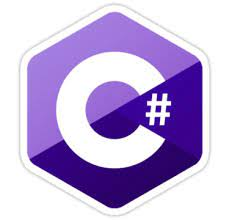
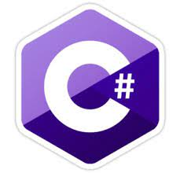

My name is Dagmawi Nebiat and I am a 20 year old student currently learning at Adama Science and Technology University. I have progressed through the curriculum for three years and counting. I am working on my bachelors degree on Computer Science and Programming. In addition to this, I can also provide freelance services depending on the job.
Many programmers have a common vision of being the best in their skills and prove that they have what it takes to achieve the best and "make the world a better place". Although it is quite similar in some aspects to what I am trying to achieve, it is not quite the same. My vision is to have a good knowledge base in each aspects of the profession that interests and as a by-product give back to the community as beneficial as possible. Some may cheer, some may ridicule but that will not halt me from reaching the next level whatever it is.
Although programming is considered as passion for some, including me, it is not the only one. I also have a passion for entertainment, art and music. They are intertwined with each other, even with programming. In my opinion it is best to include other skills and hobbies and mixing it with one another. Here is an analogy to best describe my intention on this topic. "Better to be like water rather than a rock. Even though a rock is strong with its conviction, it's not easily stirred towards new prospects. Unlike the former , water is flexible and flows easily making it easy to take new stuff." - General Iroh


 


You want to get the job done, well you came to the right place. I currently have a set of skills that are up to date with the current technologies and, also have some taste to old school programming insuring that all products that are produced are have both old and new flavors. Those skill sets include HTML5, CSS3, Javascript, Node.js, C, C++, C#, Java, Dart.